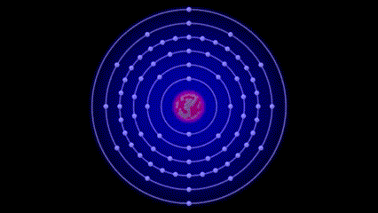

Como funciona o tubo de RX
Os raios-X são produzidos através de um processo chamado de "bremsstrahlung" (do alemão, que significa "radiação de frenagem") ou, mais tecnicamente, de "radiação de frenagem de elétrons". Esse processo ocorre dentro de um tubo de raios-X, que é o dispositivo utilizado para gerar essa radiação.
Bremsstrahlung é um termo alemão que significa "radiação de frenagem" ou "radiação de desaceleração".
No contexto da física, especialmente na geração de raios-X, o termo é usado para descrever o processo pelo qual a radiação eletromagnética é emitida quando partículas carregadas, como elétrons, são desaceleradas ou freadas ao interagir com campos elétricos de alta intensidade ou com materiais.
No contexto específico da produção de raios-X, a bremsstrahlung ocorre quando elétrons acelerados por um campo elétrico de alta voltagem são repentinamente desacelerados ao colidirem com átomos de metal em um tubo de raios-X.
Quando esses elétrons são acelerados pelo cátodo e, em seguida, interagem com o ânodo (uma peça de metal com alta constante dielétrica), eles são fortemente desviados de sua trajetória original. Essa mudança repentina de direção faz com que os elétrons emitam radiação eletromagnética na forma de fótons de alta energia, que são os raios-X.
-

Os fótons de bremsstrahlung possuem uma ampla faixa de energia, resultando em raios-X com diferentes comprimentos de onda e, consequentemente, diferentes níveis de penetração nos tecidos do corpo humano. Quando esses raios-X atravessam o corpo, eles são absorvidos de maneira diferente por diferentes estruturas internas, permitindo a formação de uma imagem que revela as diferentes densidades dos tecidos.
A produção de bremsstrahlung é um dos principais processos utilizados para gerar raios-X em aplicações médicas, industriais e de pesquisa. É importante controlar a energia dos elétrons acelerados e a intensidade do campo elétrico para obter raios-X adequados ao propósito do exame ou procedimento, e também para garantir a segurança do paciente e dos profissionais envolvidos.
A produção de raios-X envolve o uso de um tubo de raios-X que é composto basicamente por dois elementos principais: um cátodo e um ânodo, ambos contidos em um vácuo para evitar a dispersão dos elétrons.

Cátodo: No cátodo, há um filamento que é aquecido e libera elétrons por meio do efeito termiônico.
Esses elétrons são acelerados por um campo elétrico de alta voltagem.
Ânodo: O ânodo é uma peça metálica que recebe os elétrons acelerados do cátodo.
Quando os elétrons atingem o ânodo, eles são bruscamente desacelerados por meio de interações com os átomos do metal do ânodo.
Essa desaceleração abrupta dos elétrons causa uma perda de energia cinética, que é convertida em raios-X de alta energia. Essa radiação de alta energia é liberada na forma de fótons, que são partículas eletromagnéticas capazes de penetrar através dos tecidos do corpo humano e de outros materiais.
Os raios-X gerados são emitidos em todas as direções, mas são direcionados para a área do corpo que se deseja examinar através do uso de um colimador, que é uma espécie de máscara que limita o feixe de raios-X a uma área específica.
É importante mencionar que, embora os raios-X sejam usados com segurança em muitas aplicações médicas e industriais, eles também envolvem a exposição à radiação ionizante, que pode ser prejudicial em altas doses. Por isso, os procedimentos de raios-X são realizados com cautela e de acordo com os princípios de segurança radiológica para minimizar os riscos para os pacientes e profissionais envolvidos.
Fonte: http://penta3.ufrgs.br/fisica/energia/Energia_nuclear/raiox.html